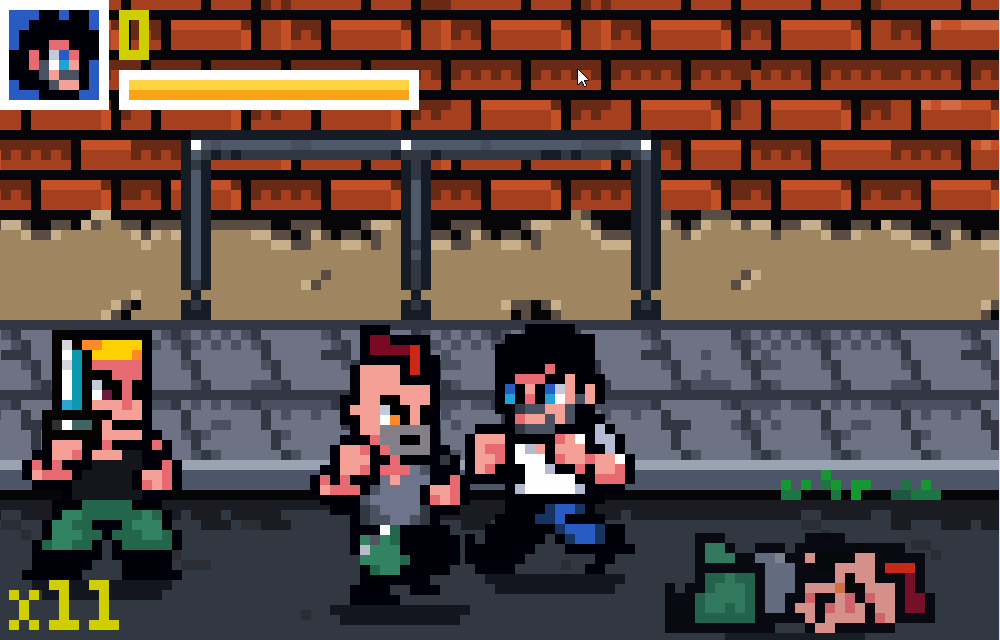
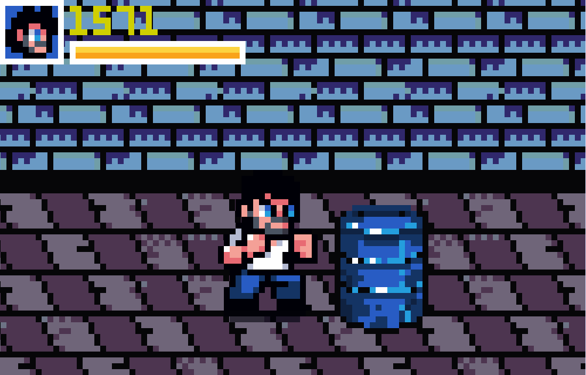

Fists of Fury
Godot 個人專案
Godot GDScript 個人專案

專案簡介
為參加 Godot Game Jam 而製作的自學專案，在 Jam 前透過 YouTube 教學花超過十小時從零學習 Godot。 教學涵蓋引擎設定、Node 與 Animation 系統、角色動作、碰撞偵測、敵人、傷害機制、UI、音效與關卡設計。
完成教學後另外花時間自行延伸，加入 Boss 過場演出、關卡轉場、補完第二關與結算流程等內容， 讓遊戲有更完整的體驗。
核心實作
- 角色動作：移動、攻擊與受擊的動作邏輯與動畫整合
- 敵人與傷害系統：敵人行為、碰撞偵測與傷害計算
- UI 與音效：血量顯示、分數計算與音效整合
- 關卡設計：場景建置與敵人配置
自行延伸
- Boss 過場演出： 進入 Boss 戰前加入 Cutscene——黑邊從上下 tween 進場、Boss 走入畫面、對話開啟， 結束後恢復玩家控制與 UI。
- 關卡結束轉場： 原設計直接傳送到下一關；改成讓角色走出場景， 給玩家一個明確的「這關結束了」的視覺回饋。
- 第二關完整化與遊戲迴圈： 補上第二關敵人配置，重用第一關 Boss 製作第二關高潮， 加入通關結算畫面，並在 Game Over 與通關畫面都加上重試與關閉選項。
技術挑戰
Boss 過場演出的流程設計
用 await 串接線性流程控制演出順序：
鎖住玩家操控 → 黑邊進場 → Boss 走入 → 對話開啟 → 結束後恢復 UI 與控制。
製作過程中做了不少順序上的嘗試，例如黑邊要先進場再讓 Boss 走， 還是 Boss 先開始走再帶入黑邊，實際看過才能判斷哪個節奏更好。
鏡頭的部分也試了幾種方式，最後決定讓鏡頭保持在玩家與 Boss 的正中間， 跟著 Boss 一起從側面移入——這樣能同時帶出兩個角色，演出效果最理想。
開發收穫
透過打磨這些細節，開始思考什麼叫「有完整感的遊戲體驗」。 過場演出、關卡收尾這些東西不在教學裡，但做了之後才發現有和沒有的差距很明顯。